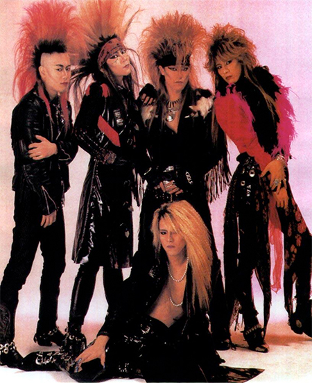

X Japan – Because You Love It
X Japan were and are a rather interesting Japanese phenomenon. As a costumed speed metal band with a penchant for 10 minute balladry they grew to become literally the biggest rock band in the nation. To this day they maintain a somewhat mythic status here in Japan, and have achieved levels frightening devotion unprecedented in the Japanese music universe. They also pretty much single handedly made the visual-kei style of music into a legitimate format for all the other costumed speed metal freaks of the world (of which there is a rather startling amount). Also, on a more personal note, they were my first exposure to Japanese music back when I was 12 years old.
{kind=link}
At that time my family hosted a 16 year old Japanese exchange student, Kazuya, and one of the Omiyage he brought was a mini CD single of X Japan that had “X”, their self declared anthem of sorts, and “Endless Rain”, potentially their most popular ‘power ballad’. First off, I was 12 and even the fact that it was a mini CD blew my shit. Then I opened it and there was a picture of the band. Similar to the picture in this article they were mostly leather clad in some absurd fashion, and their hair… Let’s just say that they took the term hair metal at its most literal of meanings. Actually their lead guitarist Hide was a licensed beautician so it kind of makes sense. Still, the stylistic impact this attire would have on Japanese Rock would be monumental, going so far as to spawn an entire genre, visual-kei.
X began back in 1982 when Toshi, the singer, and Yoshiki, the drummer/pianist/ songwriter/lead dude/eccentric weirdo were still in high school. This early period is special because they became one of the first Japanese bands to achieve massive levels of popularity and recognition solely through independent means. Their first album, Vanishing Vision (1988), was released on Yoshiki’s own label, ‘Extasy’. After that the band won a competition for unsigned bands and was picked up by Sony catapulting them to a level of popularity where they could routinely sell out the 50,000-person capacity Tokyo Dome. After nearly ten years of this though, the band decided to call it quits giving their “Last Live” on December 31, 1997. After that they went off to pursue other solo projects with Hide and Yoshiki being the most successful in this respect. Hide’s efforts however, were cut short in May of 1998 when he was found dead in his apartment in what was officially ruled a suicide, but has been debated by fans ever since. It involves alcohol, a towel, a door knob, and a back stretching maneuver (seriously, google it). Of the 50,000 people who attended his funeral 60 were hospitalized and hundreds more had to receive medical attention (three people also died in copycat suicides). There’s devotion, and then there’s psychosis.
{kind=link}
I used “” for “Last Live”, because apparently the group’s remaining members have reunited and performed in October of this year for the first time in nearly ten years. Plans for a new album have not been ruled out which I’m sure has a bunch of 30-somethings in this country subtly freaking out at their desks.
Now the question of whether you should run out and buy their music. I would say no. If you’ve been intrigued by the visual-kei world, then these guys are interesting as archaeological research, but their music isn’t for everyone. If you like speed metal then some of their earlier work off of Vanishing Vision (1988) and Blue Blood (1999) is totally great, but otherwise their songs can be a little dramatic for their own good. Most of their ballads even I can’t even sit through anymore. And I say that with love because I was once minorly (I just looked it up and apparently minorly isn’t even a word! How weird is that? Oh well…) obsessed with them (think freshman/sophomore year in high school). Still while listening to their music again for this article I did get a few tickles of fancy reminding me of that crazy world they can at times have the power to draw you into.
-Andrew Morris